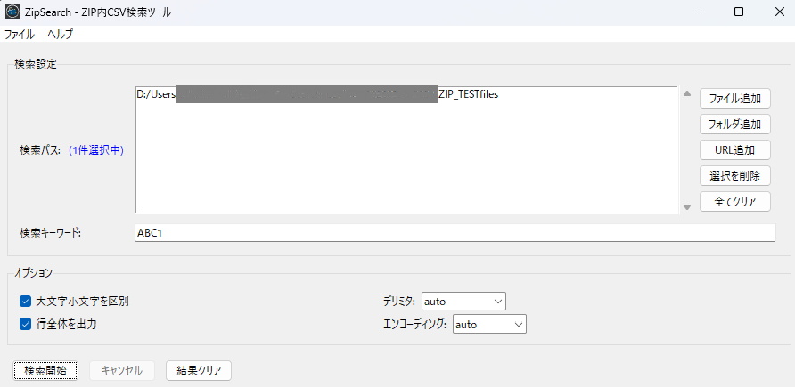
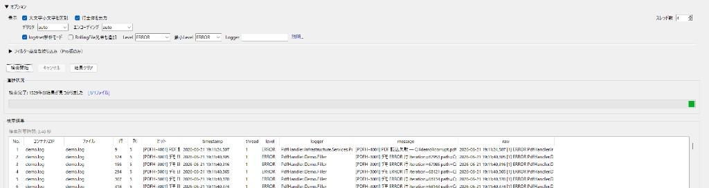
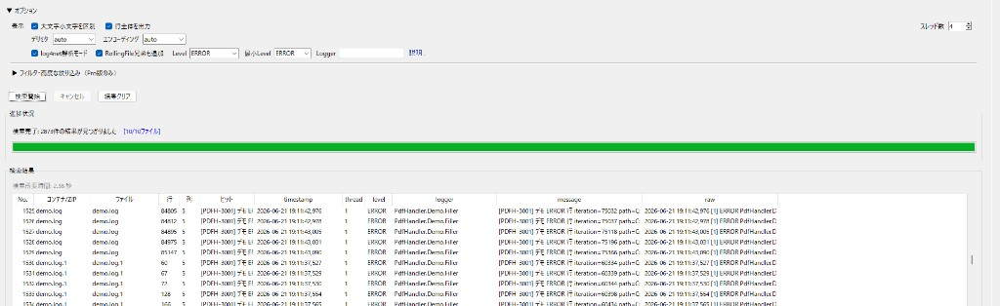

ArkLidFind
ZIP内の複数テキストファイルを一括検索。
log4netやjson,KV形式ファイルの分析にも。
ZIP・ローカル・HTTP(S) 上のログや CSV、INI / JSON / key=value を、展開せずに横断検索できる Windows 向けデスクトップアプリです。保守・障害調査・納品ログ確認に特化しています。
Personal Pro は 9,980円（税込・買い切り）・1台。月額はありません。Free は味見用の制限付きです。
検索は、利用者の端末上で行います。
概要
出力済みのログを、解凍やファイルの往復なしに絞り込みます。日常の操作は GUI です。ドラッグ＆ドロップでパスを足し、条件を保存して、同じ調査をやり直せます。
1. アーカイブ横断 — ZIP / HTTP を非展開で
納品ログ・保管アーカイブ・社内共有フォルダ上の ZIP を、展開作業なしで横断検索。ZIP 内の多層フォルダもサブフォルダ再帰（Personal Pro）の対象にできます。HTTP(S) URL からの ZIP 直接検索にも対応します。
2. log4net 構造化 — Personal Pro
PatternLayout を 日時・Level・Logger・メッセージの列に分解。ERROR / WARN 絞り込み、スタックトレースを 1 件として検索、Logger ワイルドカードに対応。LEVEL 先頭の形式や、続く印字データ行も 1 イベントにまとめます。
3. 構造化ファイル — INI / JSON / key=value
.ini / .json / key=value（拡張子が .txt / .log でも自動判定）を表形式に展開して横断検索（Personal Pro）。ヒットしたセクションの項目を 1 行にまとめて確認できます。
こんな場面で
障害の前後や、納品物に同梱されたログを、開かずに条件で絞るときに向いています。
-
障害の前後を絞る
ERROR / WARN と日時で、発生前後のログを短く切り出します。
-
log4net を列で探す
Level と Logger で構造化して探せます（Personal Pro。Free は同梱サンプルの味見）。
-
ローテーション済みログ
app.logとapp.log.1などをまとめて追跡します（Personal Pro）。 -
ZIP のまま検索
封入されたログを解凍せず、中のフォルダも含めて検索できます。
-
INI / JSON / key=value
エラーごとに分かれた設定・ダンプを表にまとめて横断します（Personal Pro）。
-
社内 URL の ZIP
HTTP(S) の URL を指定して、配布された ZIP ログを調べられます。
-
結果の共有
当たった行を CSV / JSON で渡せます（Personal Pro）。
-
向かないこと
稼働中アプリの常時リアルタイム監視や、巨大な 1 ファイルの精読・編集は対象外です。出力済みログの横断と絞り込み向けです。
画面で見る
メイン画面（GUI）
ZIP パス・HTTP URL・キーワード・オプションを一画面で設定。非展開横断検索の起点です。

log4net 解析 + 検索結果
log4net 解析をオンにし、Level を ERROR に絞った結果。timestamp / level / logger / message 列で表示します（Personal Pro）。

Rolling 兄弟横断
demo.log と demo.log.1 などを一括検索。ローテーション済みログの追跡に使います（Personal Pro）。

機能・特徴
- GUI: ファイルやフォルダのドラッグ＆ドロップ。前回条件の復元と、名前付きの検索プロファイル
- 対応形式: ZIP, 7z, CSV, TSV, TXT,
.log,.ini,.json, Excel（.xlsx / .xlsm・Personal Pro） - サブフォルダ再帰（Personal Pro）: ローカルフォルダ配下と ZIP 内。Free は直下のみ
- 構造化検索（Personal Pro）: INI / JSON /
key=valueを section / key / value 列に展開 - HTTP/HTTPS: ZIP の直接検索、フォルダ URL からの ZIP 一覧
- log4net 解析（Personal Pro）: 列化、Level / Logger フィルタ、マルチライン例外。LEVEL 先頭の形式と継続行の結合
- Rolling 兄弟横断（Personal Pro）:
app.logと.log.1等を一括 - エクスポート（Personal Pro）: CSV / JSON
- 結果の見やすさ: 結果とパス一覧の横スクロール、先頭行をヘッダにしたときの列名、狭いウィンドウでも主要ボタンが残る配置
- 並列検索（Personal Pro）: マルチスレッド
- サンプル同梱: log4net のデモと、多層フォルダ + key=value の例
ダウンロード
v1.0.12（商用・初回は prerelease）· 公開準備中
Windows 版はインストーラのみです。公開後は GitHub Releases の一覧にある当該版で、ページ下部「Assets」から setup.exe を取得してください。上部の「Source code (zip)」はインストーラではありません。初回公開は prerelease です。Latest への直リンクは置きません。
うまくいかないとき（セキュリティでブロックされる場合）
ブラウザや Windows のセキュリティ警告（SmartScreen 等）で .exe のダウンロードや実行ができない 場合は、Assets の ArkLidFind-*-prod-setup.zip をダウンロードし、解凍後の setup.exe を実行してください。
商用版 v1.0.12 のインストーラは公開準備中です。一覧に並んでいる版があっても、それが本ページの商用版とは限りません。
ライセンス
| 項目 | Free（味見） | Personal Pro（買い切り） |
|---|---|---|
| ファイルサイズ | 10 MB/ファイルまで | 無制限 |
| 同時検索 | 最大 5 ファイル | 無制限 |
| 検索結果 | 先頭 10 件 | 無制限 |
| log4net 列解析 | 同梱サンプルのみ（自分のログは行検索） | 自分のログも列解析 |
| 構造化検索（INI/JSON/KV） | 行検索 | 表形式 |
| サブフォルダ再帰 | 直下のみ | 可 |
| Excel / Rolling / 高度な絞り込み | 不可 | 可 |
| エクスポート | 不可 | CSV / JSON |
| 並列検索 | 1 スレッド | マルチスレッド |
| ZIP / HTTP 横断 | 可 | 可 |
| 端末数 | — | 1 台 |
| 価格 | 無料 | 9,980円（税込） |
| 購入方法 | — | アプリ内購入またはライセンスキー入力 |
※当方は消費税法上の免税事業者のため、表示価格はお支払い総額（税込）であり、消費税を別途請求することはありません。Personal Pro は買い切りで、月額はありません。
※有償ライセンスの直接販売は日本国内の個人・法人向けです。国外のお客様への直接販売は行っておりません。国外でのご利用や国外の方への再提供は、個別確認が必要です（利用規約 第6条（販売対象地域および国外での取扱い））。
利用規約・プライバシーポリシー（当社製品に共通。アプリ内にも表示します）
よくある質問
購入前によく聞かれる点をまとめました。操作の詳細はアプリ内の取扱説明書もご参照ください。
- Q. ArkLidFind とは何ですか？
- A. 出力済みの log4net ログや ZIP を、展開せずに横断検索する Windows デスクトップアプリです。保守・障害調査・納品ログの確認に向いています。
- Q. 無料で使えますか？価格はいくらですか？
- A. Free は無料です。1ファイル 10 MB、同時 5 ファイル、検索結果は先頭 10 件までなど、味見用の制限があります。Personal Pro は 9,980円（税込・買い切り）・1台です。アプリ内購入またはライセンスキーで利用できます。
- Q. リアルタイムでログを受信・監視できますか？
- A. できません。ArkLidFind はファイル・ZIP・アーカイブ上に出力済みのログを検索するツールです。
- Q. INI や key=value 形式のファイルも検索できますか？
- A. Personal Pro では
.ini/.jsonに加え、中身がkey=value形式の.txt/.logも表形式に展開できます。Free では通常の行検索になります。 - Q. 法人・まとめ購入はできますか？
- A. 複数ライセンスの見積に対応できます。法人・まとめ購入またはお問い合わせフォームからご相談ください。
- Q. Windows 以外の OS や国外向け販売はありますか？
- A. 対応は Windows 10 / 11 です。有償ライセンスの直接販売は日本国内の個人・法人向けです。国外への直接販売は行っていません。国外での取扱いは利用規約の販売対象地域・国外での取扱いに従い、個別確認が必要です。
- Q. 問い合わせ先はどこですか？
- A. お問い合わせフォームまたはメール（support@office-goplan.com）まで。操作の詳細はアプリ内の取扱説明書をご覧ください。
法人・まとめ購入
同じ調査を複数台で行う場合は、台数に応じた見積でライセンスをまとめられます。Personal Pro の定価は 1 台 9,980円（税込・買い切り）です。
- 複数ライセンス: 台数に応じた見積・ライセンスキーの発行
- 請求書払い: 法人向け後払い（銀行振込）に対応可能な場合があります
- 導入の相談: 部署での使い方や台数の見積もり
法人・まとめ購入の相談（フォーム） その他のお問い合わせ（フォーム）
購入相談のフォームには製品「ArkLidFind」・ご購入のご相談・本文ひな形が入っています。空欄を埋めて送信してください。
メールの場合は次のアドレスへ直接お送りください。
support@office-goplan.com